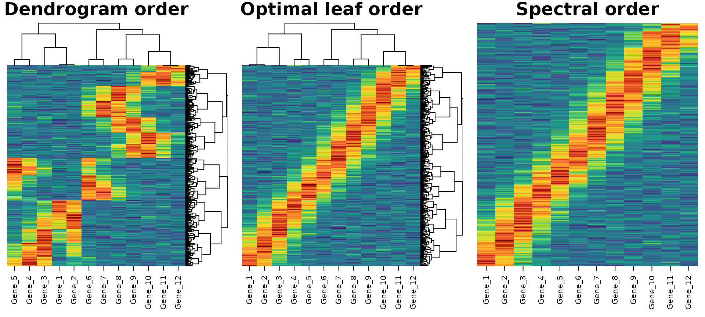
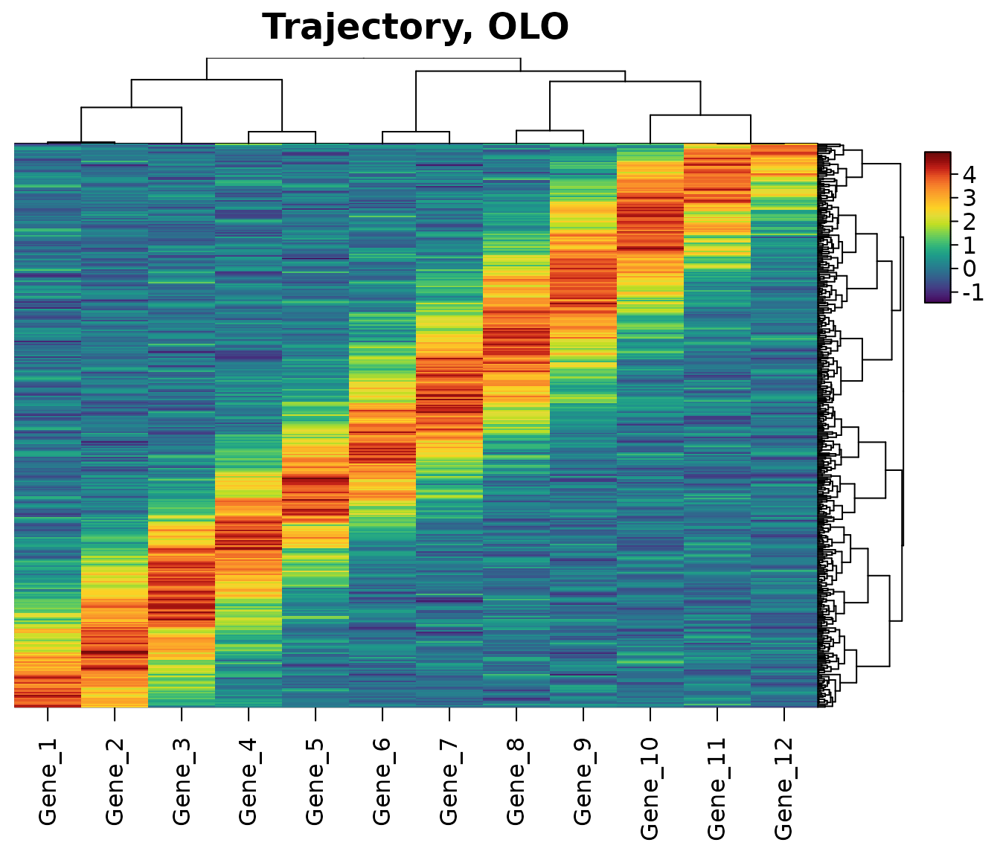
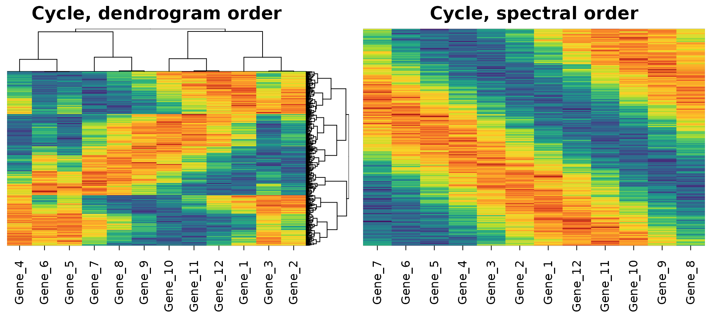
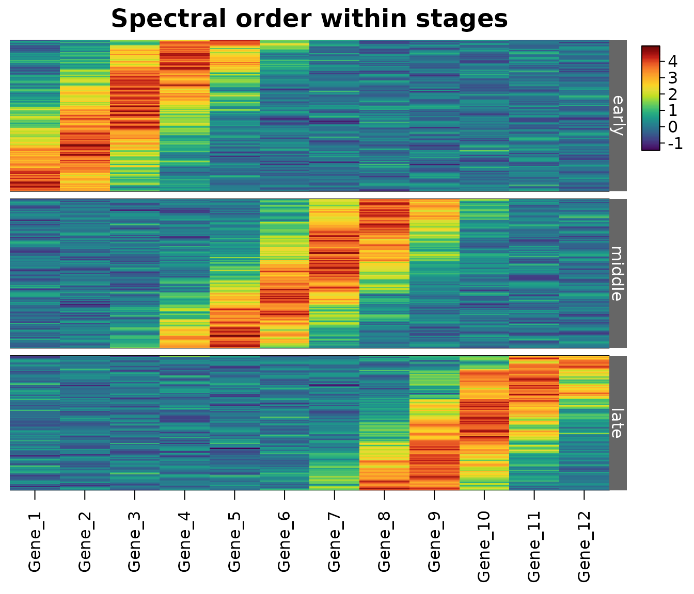

The order of the rows and columns is the most important choice in a
heatmap after its colours: patterns are only visible when similar rows
sit next to each other. A dendrogram fixes which rows belong together,
but not their order: each of its n - 1 branches can be flipped, so a
dendrogram of 100 rows can be drawn in 2^99 orders.
HeatmapR offers five ways to order the rows
(tree_order_y) and columns (tree_order_x):
| Order | What it does | Needs a dendrogram |
|---|---|---|
"default" |
the order stats::hclust() returns |
yes |
"olo" |
flips branches so that neighbouring rows are as similar as possible (optimal leaf ordering) | yes |
"mean" |
orders branches by their mean values (stats::heatmap()
uses the sum of their leaves’ means) |
yes |
"spectral" |
lays the rows out along the main path through the data | no |
"peak" |
orders features by where they are highest along the rows, so that cascades run diagonally | no |
This article compares them on three kinds of data, measures how good each order is, and explains how the optimal leaf and spectral orders are found.
Three kinds of data
Each dataset has 400 rows (think of them as cells) and 12 columns (genes), shuffled so that the order of the data says nothing.
set.seed(3)
n <- 400
noise <- function() matrix(rnorm(n * 12, sd = 0.4), n)
# CLUSTERS: 4 groups of rows
group <- sample(4, n, replace = TRUE)
centres <- matrix(rnorm(4 * 12, sd = 2), 4)
clusters <- centres[group, ] + noise()
# A TRAJECTORY: rows at random times, 12 genes peaking in turn
time <- runif(n)
peak <- seq(0, 1, length.out = 12)
trajectory <- outer(time, peak, function(t, p) 4 * exp(-(t - p)^2 / 0.02)) +
noise()
# A CYCLE: rows around a loop, as in the cell cycle
angle <- runif(n, 0, 2 * pi)
phase <- seq(0, 2 * pi, length.out = 13)[-13]
cycle <- 2 * cos(outer(angle, phase, "-")) + noise()
data <- list(clusters = clusters, trajectory = trajectory, cycle = cycle)
for(z in names(data)) {
dimnames(data[[z]]) <- list(paste0("Cell_", 1:n), paste0("Gene_", 1:12))
data[[z]] <- data[[z]][, sample(12)]
}Measuring an order
A good order puts similar rows next to each other, so a simple
measure of an order is the length of the path it takes through the data:
the sum of the distances between neighbouring rows. The shortest
possible path is the solution of a travelling salesman problem, which
can’t be found exactly for large data, but shorter is better.
heat_map_info() returns the order in which a heatmap shows
its rows.
path_length <- function(x, order) {
sum(sqrt(rowSums(diff(x[order, ])^2)))
}
# The order of the rows of a heatmap, drawn on a null device
row_order <- function(x, ...) {
grDevices::pdf(NULL)
on.exit(grDevices::dev.off())
heat_map_info(heat_map(x, popup = FALSE, ...))$row_order
}
orders <- list(
random = function(x) sample(nrow(x)),
default = function(x) row_order(x, tree_y = TRUE),
mean = function(x) row_order(x, tree_y = TRUE, tree_order_y = "mean"),
olo = function(x) row_order(x, tree_y = TRUE, tree_order_y = "olo"),
spectral = function(x) row_order(x, tree_order_y = "spectral")
)
paths <- sapply(data, function(x) {
sapply(orders, function(f) path_length(x, f(x)))
})
round(paths)
#> clusters trajectory cycle
#> random 3049 2552 2668
#> default 595 709 678
#> mean 586 709 693
#> olo 529 615 599
#> spectral 533 616 593Relative to the dendrogram’s own order:
round(100 * sweep(paths, 2, paths["default", ], "/") - 100)
#> clusters trajectory cycle
#> random 413 260 294
#> default 0 0 0
#> mean -1 0 2
#> olo -11 -13 -12
#> spectral -10 -13 -13Every order beats a random one by far. Optimal leaf ordering and the spectral order both shorten the dendrogram’s own path by about an eighth on all three datasets: optimal leaf ordering by choosing the dendrogram’s flips well, the spectral order without a dendrogram at all. The order at large, which a sum of neighbouring distances barely sees, shows in how well each order recovers the times of the trajectory’s rows (a rank correlation of 1 is a perfect match). Here optimal leaf ordering and the spectral order both recover them almost exactly, and the dendrogram’s own order doesn’t. Optimal leaf ordering can only join the trajectory’s pieces in an order the dendrogram allows; the spectral order needs no dendrogram:
A trajectory in three orders
The three heatmaps below show the same trajectory: in the dendrogram’s own order, after optimal leaf ordering, and in spectral order. The dendrogram cuts the trajectory into pieces that are flipped at random; optimal leaf ordering joins them up, and the spectral order lays out the whole trajectory without a dendrogram, so in both the genes peak one after another along the diagonal. The columns are ordered in the same way.
heat_map_custom(popup = FALSE, layout = c(1, 3))
heat_map(data$trajectory, tree = "both", axis_text_y = NA,
legend = FALSE, title = "Dendrogram order")
heat_map(data$trajectory, tree = "both", tree_order_x = "olo",
tree_order_y = "olo", axis_text_y = NA, legend = FALSE,
title = "Optimal leaf order")
heat_map(data$trajectory, tree_order_x = "spectral",
tree_order_y = "spectral", axis_text_y = NA, legend = FALSE,
title = "Spectral order")
Optimal leaf ordering
Optimal leaf ordering ("olo") keeps the dendrogram and
flips its branches to give the shortest path among all of its 2^(n-1)
orders. HeatmapR finds it exactly with the dynamic
programme of Bar-Joseph, Gifford and Jaakkola (2001): for every branch
and every pair of rows that could end up at its two ends, the shortest
path through the branch is built from the shortest paths through its two
halves. That is a cube of the number of rows in the worst case, so the
work is done as blocked min-plus matrix products (the same memory layout
as BLAS, with SIMD instructions where the processor has them), and steps
that bounds show can’t improve a path are skipped, which leaves 2 to 25%
of the work. Up to 4000 rows are ordered exactly in well under a second;
larger dendrograms are ordered in blocks of rows.
Optimal leaf ordering is the right choice when the dendrogram matters: the clusters, their nesting and the order within each are all kept, and only the arbitrary flips are chosen well. It works with any distance and linkage, and within groups (below).
heat_map(
data$trajectory,
tree = "both",
tree_order_x = "olo",
tree_order_y = "olo",
axis_text_y = NA,
title = "Trajectory, OLO"
)
Spectral ordering
A dendrogram can only flip whole branches, so data that change
gradually rather than falling into groups always come out in pieces. The
spectral order ("spectral") doesn’t need a dendrogram. It
joins each row to its 6 nearest neighbours in a graph (by
dist_method), with weights that fall with distance from the
nearest neighbour, as UMAP weights its graph (McInnes, Healy and
Melville 2018), and then:
- splits the graph recursively where it is thinnest (Shi and Malik 2000), sorting each part by its Fiedler vector (the second eigenvector of its graph Laplacian; Fiedler 1973, Atkins, Boman and Hendrickson 1998), with the two halves of every split turned to meet where they are closest;
- reverses runs of up to 12 rows wherever that shortens the path (a windowed 2-opt, Croes 1958).
Trajectories and gradients are laid out along their length, clusters one after another, and cycles around their loop, which no dendrogram can do: below, the cells of the cycle go round the loop once, and the genes, whose peaks are spread around the cycle, follow it too.
heat_map_custom(popup = FALSE, layout = c(1, 2))
heat_map(data$cycle, tree = "both", axis_text_y = NA, legend = FALSE,
title = "Cycle, dendrogram order")
heat_map(data$cycle, tree_order_x = "spectral", tree_order_y = "spectral",
axis_text_y = NA, legend = FALSE, title = "Cycle, spectral order")
Up to clust_max rows (5000 by default) are ordered
exactly; larger data is ordered from clust_max landmark
rows, with every other row placed beside its nearest landmark. With a
dendrogram (tree_y = TRUE), "spectral" keeps
the dendrogram and orders its branches by the mean spectral position of
their rows, so that a gradient runs in one direction across it.
Orders within groups
When the rows are grouped, by clusters cut from a dendrogram, k-means
clusters (tree_kmeans_y) or groups you supply to
tree_cut_y such as cell types, every order applies within
each group. Below, the cells of the trajectory are grouped into early,
middle and late, and ordered spectrally within each group, without a
dendrogram.
stage <- cut(time, c(0, 1/3, 2/3, 1), labels = c("early", "middle", "late"))
heat_map(
data$trajectory,
tree_cut_y = stage,
tree_label_y = TRUE,
tree_order_y = "spectral",
tree_order_x = "spectral",
axis_text_y = NA,
title = "Spectral order within stages"
)
Which order to use
-
Clusters: any dendrogram order shows the clusters;
"olo"makes the order within each cluster smooth and is worth its small cost. -
Gradients, trajectories, time courses and cycles:
"spectral", without a dendrogram. With a dendrogram,"olo"or"spectral"(which orders its branches along the gradient). -
Close to
stats::heatmap():"mean"orders branches by their means (stats::heatmap()uses the sum of their leaves’ means, which favours small branches). -
Your own order: supply an
hclustobject (e.g. reordered with the dendsort or seriation packages) totree_y, or reorder the rows of the data and leave the order alone.
The orders are found by heat_map_clust() too, for use
outside a heatmap:
tree <- heat_map_clust(data$trajectory, order = "olo")
head(tree$order)
#> [1] 352 163 5 121 109 274References
Atkins, J. E., Boman, E. G. and Hendrickson, B. (1998). A spectral algorithm for seriation and the consecutive ones problem. SIAM Journal on Computing, 28(1), 297-310. doi:10.1137/S0097539795285771
Bar-Joseph, Z., Gifford, D. K. and Jaakkola, T. S. (2001). Fast optimal leaf ordering for hierarchical clustering. Bioinformatics, 17(suppl 1), S22-S29. doi:10.1093/bioinformatics/17.suppl_1.S22
Croes, G. A. (1958). A method for solving traveling-salesman problems. Operations Research, 6(6), 791-812. doi:10.1287/opre.6.6.791
Fiedler, M. (1973). Algebraic connectivity of graphs. Czechoslovak Mathematical Journal, 23(2), 298-305. doi:10.21136/CMJ.1973.101168
McInnes, L., Healy, J. and Melville, J. (2018). UMAP: uniform manifold approximation and projection for dimension reduction. arXiv:1802.03426. doi:10.48550/arXiv.1802.03426
Shi, J. and Malik, J. (2000). Normalized cuts and image segmentation. IEEE Transactions on Pattern Analysis and Machine Intelligence, 22(8), 888-905. doi:10.1109/34.868688